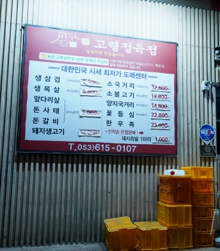
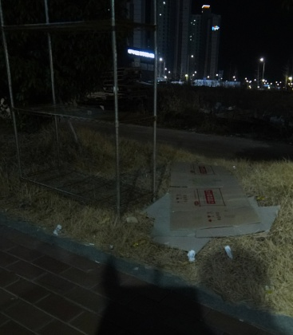
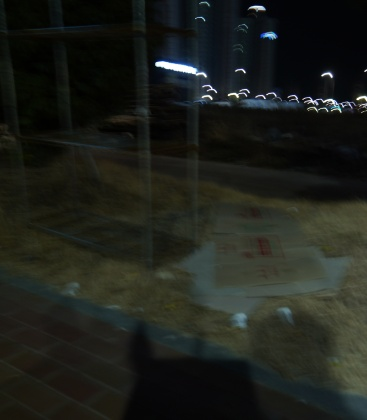
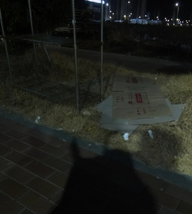
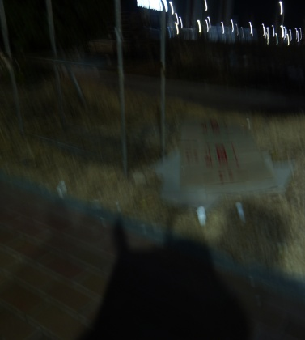

Goal. Can the pipeline's sharpness score (Laplacian variance, sim_bench/quality_assessment/rule_based.py)
detect real camera-shake blur, compared to a classical alternative and a state-of-the-art deep metric?
D:\occlusion_dataset\realblur\j_sample\{blur,gt}./1000-clip normalization..venv/Scripts/python scripts/experiment_defectscore_blur.py. Raw scores: data/scores.csv.| Method | Pair accuracy | ROC-AUC | Median sharp | Median blurred |
|---|---|---|---|---|
| Ours — Laplacian variance | 99.4% | 0.871 | 163.6 | 45.6 |
| Classical — Tenengrad | 99.0% | 0.765 | 18374 | 7692 |
| SOTA — MUSIQ | 98.9% | 0.893 | 55.1 | 33.8 |
Production normalization check: clip(lap/1000) produced 0 ties and 0 saturated pairs on this
dataset — but note RealBlur is dim indoor scenes with low variance; bright textured outdoor photos regularly
exceed 1000 (see the noise report where patches hit 12,700), so saturation remains a latent risk.
Top row: typical wins. Bottom row: the failure mode — scene121 pairs where Laplacian ranked the blurred image higher (noise/texture in the dark blurred frame inflates local variance); MUSIQ ranked both correctly.





Full image set: D:\occlusion_dataset\realblur\j_sample (702 pairs; full archive RealBlur.tar.gz alongside).
2026-07-10_defect_noise). No change needed for blur ranking; for absolute flagging, MUSIQ or a
content-normalized threshold would be better.
Generated 2026-07-10 by scripts/experiment_defectscore_blur.py;
metrics in data/metrics.json.